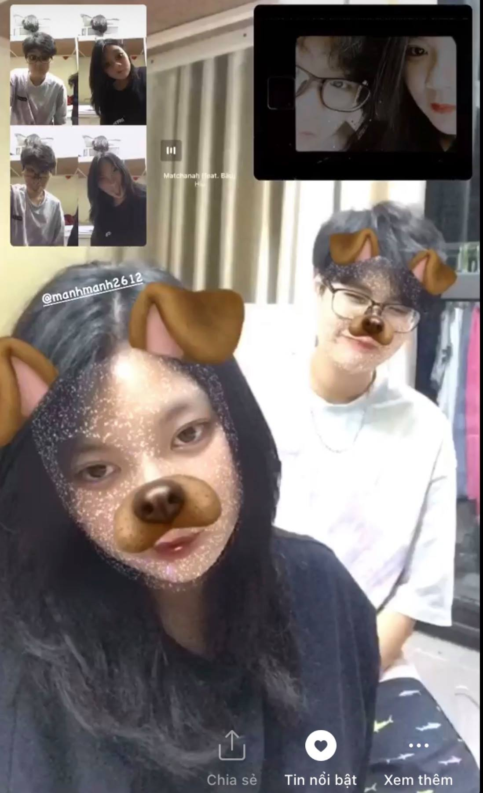

Tự lập để trường thành - Lựa chọn đúng đắn???
Ngày đầu bỡ ngỡ
Thiệt thòi hơn các khoá trước, K8 chúng tôi nhập học khi tình hình covid diễn biến phức tạp. Chính vì lẽ đó mà Going Merry-lễ chào mừng học sinh mới hàng năm của Fschool không thể tổ chức offline được. Mặc dù vậy, các anh chị khoá trước vẫn cố gắng cho chúng tôi một Going Merry online tuyệt vời, 'độc nhất vô nhị' từ trước tới giờ của Fschool. Chúng tôi sử dụng google meet làm 'phương tiện' để xích lại gần nhau hơn. Trò chuyện, tâm sự, chia sẻ kinh nghiệm 'sinh tồn tại trường 3 màu fpt',... có đủ. Chúng tôi quay video gửi các anh chị 'chủ nhà, phó nhà, support' để có được video tập thể hết sức gắn kết.
Going Merry online
Ngôi nhà mới của tôi ra sao?
Tôi xa gia đình 5 ngày mỗi tuần, nỗi nhớ nhà chắc hẳn không thể không có nhưng có lẽ là tôi được nhiều hơn mất... Tôi quen thêm được nhiều thầy cô mới, nhiều bạn bè mới và có nhiều hạnh phúc mới!
Học tập trong môi trường nội trú thế nên chắc chắn không thể thiếu những người bạn kí túc xá cùng nhau 'chia ngọt sẻ bùi'. Mới đầu nhập trường, phòng G514 chúng tôi được cô quản nhiệm đặc biệt 'quan tâm'. Ngay buổi họp tầng đầu tiên đã ra muộn. Rồi tiếp đó là tội lén ăn mì tôm trong phòng. Cô cũng đưa ra 'hình phạt rất nhẹ tay' thôi, làm 10 đứa phòng tôi (có cả tôi) leo 5 lượt lên xuống cầu thang Dom, mà vừa đi lại còn vừa phải nói:"Chúng em xin lỗi mì tôm ạ", cũng đến là ngại với các bạn khác. Nhưng 'vẫn chứng nào tật đấy', sự 'lén lút, vụng trộm' ấy làm chúng tôi gắn kết theo cách của riêng chúng tôi, hoạn nạn có nhau. Nhất quỷ, nhì ma, thứ ba học trò!
Trường thi xếp lớp theo trình độ Tiếng Anh, và tôi được xếp vào lớp 10A9-đây là một trong số những lớp ở tầm giữa của khối, vậy nên sau mỗi kì thi chuyển lớp, !0A9 phải tạm biệt không ít thành viên cũ để rồi được chào đón những thành viên mới gia nhập 'đại gia đình' này. Dù vậy, tôi thấy đây là một cách hay để mọi người có thể giao lưu, làm quen nhiều bạn mới hơn chứ không chỉ quen biết mỗi bạn cùng lớp. Tôi thường hay nói đùa rằng kì thi chuyển lớp của trường là kì thi 'Mở rộng mối quan hệ".
Tuần quân sự kì 2 của lớp tôi
Những trải nghiệm khó quên
" Học không chơi đánh rơi tuổi trẻ
Chơi không học bán rẻ tương lai "
Hoạt động ngoại khoá là điểm luôn nổi bật khi nhắc đến Fschool. Các Fschooler rất năng nổ tham gia các CLB, tôi cũng là một Fschooler, tôi không ngoại lệ. Từ đầu năm tôi đã tham gia CLB FRITS - đây là một câu lạc bộ STEAM của trường tôi. Mới đầu cũng còn chưa quen, chưa tiếp xúc nhiều, nhưng sau dần, qua những đợt chạy deadline quên giờ giấc của cả CLB, chúng tôi càng thân thiết, gắn bó hơn.
Tôi còn nhớ có lần CLB tôi colab với bên THPT Chương Mỹ A để tổ chức một buổi STEAM, đợt đấy, chúng tôi thức gần như nguyên đêm, chỉ ngủ đúng 3 tiếng vì phải chuẩn bị nốt con robot cho buổi STEAM ngày hôm sau. Mặt ai cũng không giấu được sự mệt mỏi, thế nhưng cũng không thiếu đi niềm vui, niềm hạnh phúc vì buổi STEAM hôm đó khá thành công.


Rồi cũng một đợt khác, chúng tôi tham gia dự sự kiện VIIE(II)-STEAM FESTIVAL có cả các cấp cao của nhà nước tham gia. Để có sự thể hiện tốt nhất, CLB đã chạy deadline quên giờ giấc, làm việc hết năng suất vì được thông báo với thời gian khá gấp rút. Anh chủ tịch CLB chọn ra một số thành viên sẽ đại diện CLB tham dự sự kiện ngày hôm đó. Tôi rất vui khi mình là một trong số đó, tôi cũng đã cố gắng hết mình hoàn thành nhiệm vụ được giao.


Sau đợt đó, certificate của CLB được trao cho những cá nhân xuất sắc, tôi cũng được nhận. Nó cũng giúp tôi tự tin hơn để hoàn thành tốt nhiệm vụ của một phó ban phần mềm của FRITS mà anh chủ tịch CLB đã tin tưởng giao cho tôi.

Nguyễn Thảo Linh
Học sinh cấp 3
Học tại: Fschool (Hoà Lạc)
Tôi đam mê tin học, thích khám phá công nghệ.
Những lúc rảnh rỗi là thời gian tôi dành cho sở thích thể thao của mình, cùng bạn bè đi chơi...
Cảm ơn đã dành ít phút để đọc. Chúc bạn một ngày tốt lành!